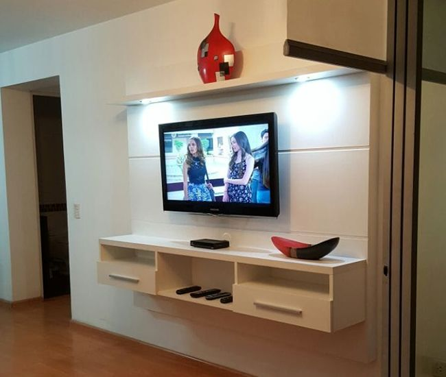
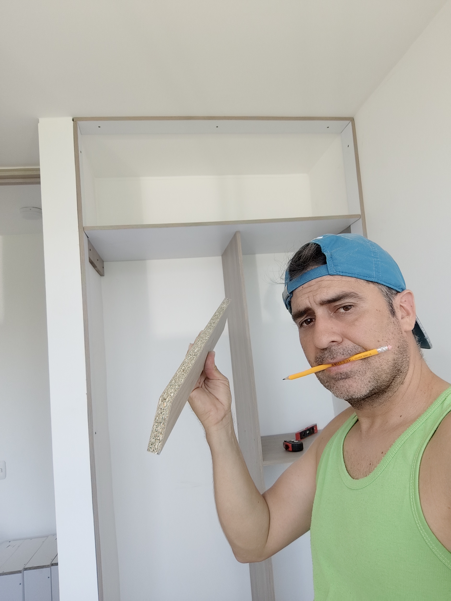
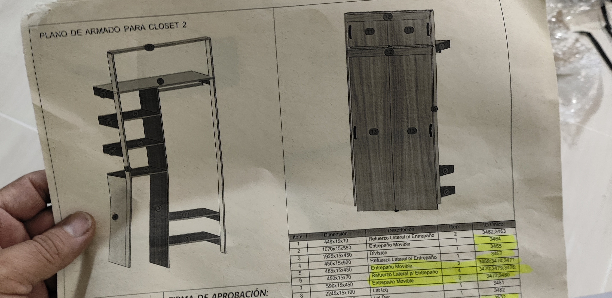
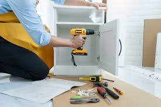
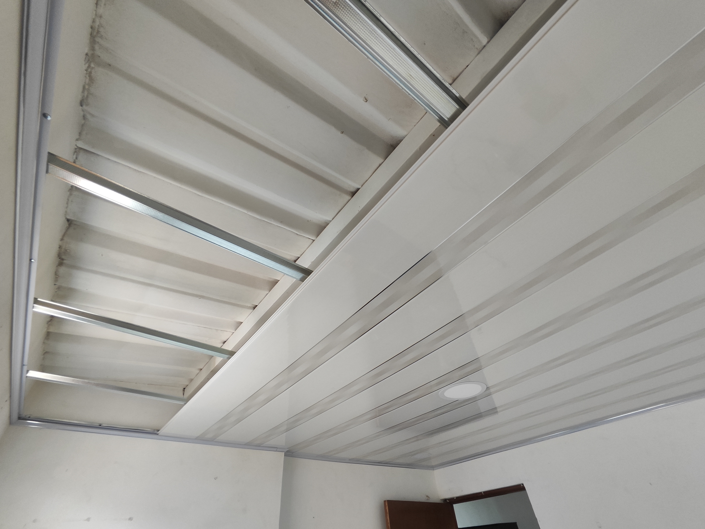
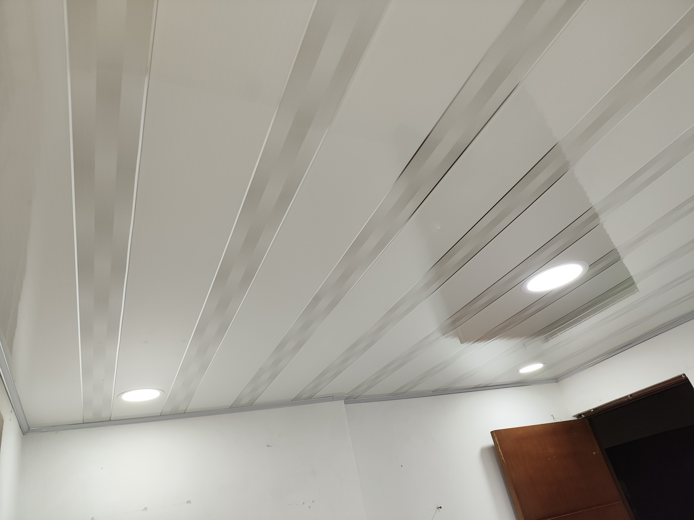

whatsapp 316 152 8810
whatsapp 316 152 8810 fred-san@outlook.com
fred-san@outlook.com www.facebook.com/Electryrios
www.facebook.com/Electryrios www.instagram.com/electryrios Bucaramanga-giron-floridablanca-piedecuesta
www.instagram.com/electryrios Bucaramanga-giron-floridablanca-piedecuesta
whatsapp 316 152 8810fred-san@outlook.comwww.facebook.com/Electryrioswww.instagram.com/electryrios
La melamina es una fina y delgada película que cubre los tableros de aglomerado. Es un compuesto orgánico muy versátil que también se usa en la fabricación de otros productos como vajillas, asientos de inodoro o baldosas. La melamina destaca por su calidad y por su resistencia, lo que la hace un excelente material para dar un perfecto acabado a tus proyectos con tableros de aglomerado. A continuación, podrás conocer cuáles son las herramientas básicas para trabajar la melamina y poder iniciarte en la fabricación de muebles con este material.
nosotros te ayudamos a diseñar e instalar ese proyecto que tanto deseas para darle ese toque de comodidad y diseño en tu hogar, entretenimiento, gabinetes de cocina, armarios, oficina entre otros más....



Hay varias razones para obtener ayuda profesional para el diseño e instalacion de tus proyectos:


¿Cómo funciona un cielo raso? Conoce las ventajas que ofrece el cielo raso en los hogares ... El cielo raso o falso techo, es un elemento ubicado a cierta distancia del techo y puede ser fabricado en PVC, acero, aluminio, madera, yeso u otros materiales. Lo habitual es que se fije al techo mediante piezas metálicas, y de este modo, funciona como un revestimiento de la parte superior de las estructuras.